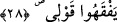

25. (Mûsâ) dedi ki: Rabbim, yüreğime genişlik ver.
Mûsâ (a.s.) üzerine yüklenen ağır görevi ve sorumluluğu bildiği için Allah’tan yardım
istedi. Ya da Mûsâ (a.s.) ben yalnızım, Fir’avn ve askerlerine nasıl mukavemet ederim
diye endişe etti; onun için Cenâb-ı Hak’tan kuvvet taleb ve duâ etti, niyaz ederek “dedi
ki: Rabbim, yüreğime genişlik ver.” Burada ‘sadr’dan maksad; kalbdir, içinde kalbin
bulunduğu sîne değildir. Yani, ey Rabbim, kalbimi genişlet ki düşmanlarımın inatçılığı
ve kötülüğü onu daraltmasın, onların güçlerinden ve çokluklarından korkmasın.
Bil ki kalbin genişletilmesi Allâh’ın peygamberlere ve kâmil velîlere bir ihsânıdır. Bu
nimetten en büyük nasîbi bizim Peygamberimiz (a.s.) almıştır. Çünkü kalb genişliği ona
hem sûreten hem de mânen verilmiştir. Çünkü çocukken O’nun kalbi açılmış, içinde
şeytanın nasîbi olan kan pıhtısı çıkarılıp atılmış ve kalbi altın bir tas içinde yıkanmıştır.
Yine kırk yaşlarına doğru peygamberliğin yükünü taşıması, mi‘racda da Hakk’ın
esrârına güç yetirebilmesi için şakk-ı sadr (göğsünün yarılması) gerçekleşmiştir. Hz.
Peygamber (a.s.) vasfedilmesi imkansız yumuşaklık, affedicilik, sabır, intikam almaktan
geri durmak, lütuf, duâ ve nasihat gibi bir çok üstün özelliğe sâhip olmuştur.
26. İşimi bana kolaylaştır.
Sebeplerini yaratarak ve engelleri kaldırarak “işimi” tebliğin görevini “bana
kolaylaştır.”
27. Dilimden (şu) bağı çöz.
“Dilimden” şu “bağı çöz.” “__WORD__ (düğüm, bağ)” kelimesinin nekre olması onun
azlığına delâlet eder. Derler ki: “Lisan olmasa insan, ancak başıboş bir hayvandan veya
canlandırılmış bir resimden başka nedir?” “İnsan iki küçük uzvu ile, yani kalbi ve
diliyle insandır.”
28. Ki sözümü anlasınlar.
“Ki sözümü anlasınlar.” Yani Fir’avn ve kavmi peygamberliğimi tebliğ ederken
sözümü anlasınlar. Tebliğ ancak güzel konuşanın ağzından çıkarsa mükemmel olur.
Çocukken ağzına soktuğu bir ateş parçası sebebiyle Hz. Mûsâ’nın dilinde pelteklik
vardı. Bu şöyle olmuştur: Fir’avn bir gün Mûsâ’yı kucağına aldı. Sakalları